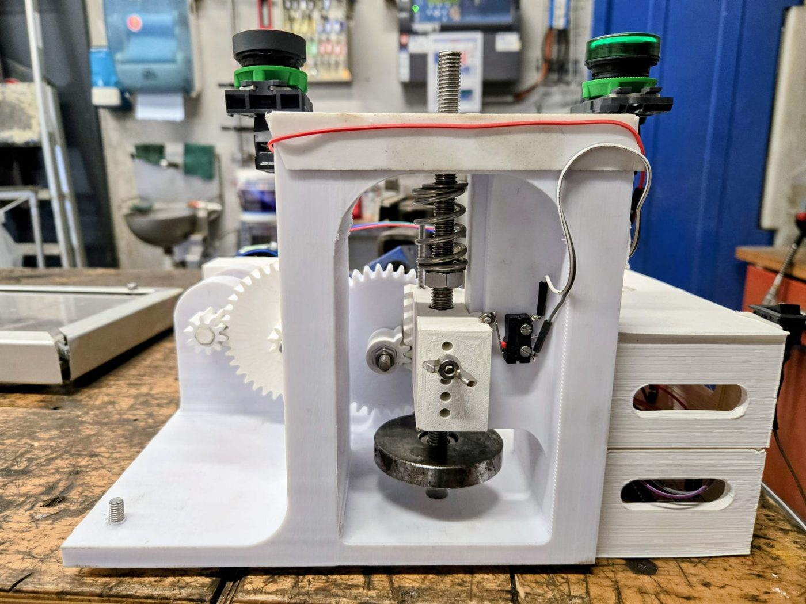

Stage, Cinq Degrés Ouest, 2026
Deux machines pour casser les pinces de homard
Il n'existait rien sur le marché pour décortiquer les pinces de homard. J'ai conçu deux prototypes : le Casse-Dactylus, avec un système à crémaillère, et le Casse-Pince, avec un ressort qui frappe la pince.
J'ai ensuite motorisé le Casse-Pince et écrit tout le programme de commande. Un capteur de distance détecte la pince, le moteur arme le ressort, et un fin de course sert de point de départ.